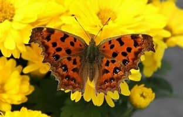
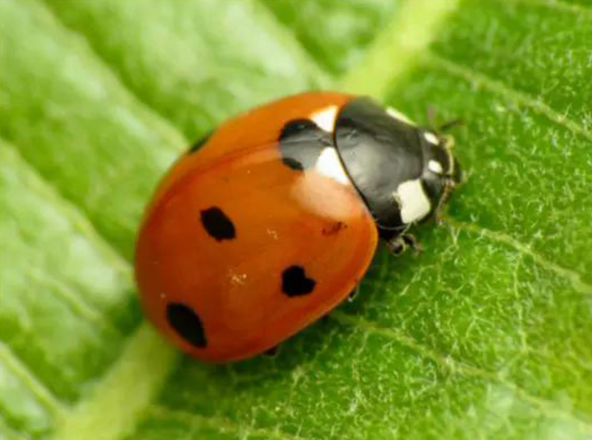

黄钩蛱蝶

黄钩蛱蝶，又名葎胥是鳞翅目，蛱蝶科，蛱蝶亚科，钩蛱蝶属，黄钩蛱蝶种。
生活习性与外形特征
其生长阶段分为卵，幼虫，蛹，成虫。
其卵为瓜形，绿色。
其幼虫为五龄虫，一龄无枝刺，仅黑褐色刚毛，2龄开始出现枝刺，3龄后中，后胸及腹部多节亚背线上枝刺变黄褐色，4龄个体节背后中线枝刺同样变黄褐色，5龄时所有体节枝刺均呈黄褐色。初孵化幼虫有啃食卵壳的现象，但是一般不吃光，主要啃食寄葎草等寄主植物（画面中的植物就是葎草），幼虫在老熟到一定程度后会结蛹。
其蛹体色为土褐色，顶部有尖突，侧部两突起呈钝角，胸背有纵向大尖突。腹背各节均有两尖突排成两列，仅第1对尖突和后胸背面有2块银斑闪光。触角褐白相间，横纹明显。在北方地区蛹通常一年1到2代，且最后一代在深秋羽化。
其成虫整体呈黄褐色，翅反面暗黄褐色，触角球棒状，正面黑褐、底面灰白，顶端黄褐前足退化，足部具钩刺，适合停歇在植物上。翅膀结构前翅外缘黑褐，中部孤形内凹，亚缘有黑褐色波纹，翅面有9个黑斑。此种蝴蝶喜进食花蜜和水果或树木的汁液，以成虫过冬，因此会在深秋羽化。
生活环境
- 常见于草地、田边、路边荒地，这些地方有充足的阳光和草本植物，利于成虫活动和幼虫取食。
- 也会出现在林缘、灌木丛边缘，既保证一定遮荫，又不缺开阔空间，符合其不喜浓密密林的习性。
七星瓢虫

七星瓢虫是一种常见且重要的昆虫，以下是从目、科、属、种到外形、生活习性等方面的介绍：
分类地位
属于昆虫纲鞘翅目瓢甲科瓢虫属，种为七星瓢虫。
外形特征
成虫身体卵圆形，背部拱起呈水瓢状。头黑色，复眼黑色，内侧凹入处各有1淡黄色点。触角褐色，口器黑色。前胸背板黑，前上角各有1个较大的近方形的淡黄地。小盾片黑色。鞘翅红色或橙黄色，两侧共有7个黑斑，翅基部在小盾片两侧各有1个三角形白地。体腹及足黑色。
生活习性
七星瓢虫为完全变态发育，一生经历卵、幼虫、蛹、成虫四个阶段。成虫和幼虫主要捕食蚜虫、介壳虫等农业害虫。它们白天活跃，夜间多不活动，有假死性，遇侵袭时会分泌黄色怪味液体防御。七星瓢虫是迁飞性昆虫，成虫飞翔力较强，有迁向气候凉爽的山丘越夏习性，冬季则在干燥、温暖的枯枝落叶下等地越冬。
生活环境
栖息环境广阔，只要有大量蚜虫等猎物的地方，就能发现它们。